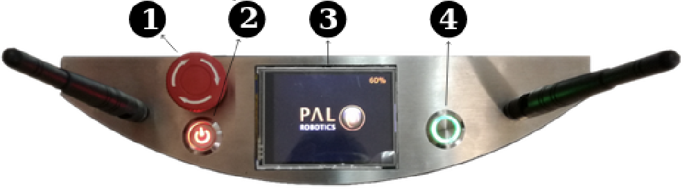

Using TiagoDual
Start Up
Tiago has been ported to ROS2, this has lead to some changes, but not for starting the tiago. Make sure that the Tiago is in a free space when turning on. Due to the fact that the torso might go up and the arms will move.
Unrelease the emergency button (1)
Press the power switch. It will turn red when it is on (2)
Hold the on/off button (green) for 1 second (4)
The green button has three indicators with different modes described below:
When the state is fixed, the robot is running
When the state is slow-blink, the robotsystem is booting or shutting down
When the state is fast-blink, the emergency button is pressed
The display (3) will only show the battery percentage.
{kind=link}
After roughly a minute, the robot will be booted up. The orange sensors on the base will be activated and the torso will go up. This is the sign that the robot is booted up correctly.
Network
The Tiago has a WiFi network called ‘tiago-dual-115-Hotspot’, and the default password is now ‘PAL-H0tsp0t’. You can also connect the Tiago via an ethernet cable at the torso. The IP addresses are listed below. When you are connected and typing the IP address in a web browser, you will see the web interface of the Tiago.
It is also possible to ssh in the Tiago. First make sure you are connected. Type in the terminal the following:
ssh pal@<IP-address>
The password is pal. To log in as root, type:
ssh root@<IP-address>
The password is palroot.
Interface |
IP address |
|---|---|
WiFi |
10.42.0.1 |
Ethernet |
10.68.0.1 |
Control
Tiago can be driven by the LogiTec joystick. The joystick module is already launched. First of all, to make sure that the joystick work, press the vibration button. This is located in the front of the robot. Make sure that the switch on top is on D. To move the robot, press START to give priority to the joystick. To move the base forward and backward, use the left analog stick. To rotate the base on its Z axis, the right analog stick has to be operated. To move the torso up and down, the LB and LT buttons needs to be pressed. Press LB to raise the torso and LT to move it downwards. To move the head:
Press Y for upwards
Press A for downwards
Press X to move to the left
Press B to move to the right
{kind=link}
Shut Down
In order to shut down the Tiago follow the procedure below:
Make sure that the torso is down, until the arms lie almost on the base.
Place the arms on the foam pads on the base
Press the On/Off button for 1 second.
When the On/Off button stops blinking, pres the electric switch.
Warning
Pay Attention! The motors will shut down, so the head will fall down and the arms too. That’s why it is important to let the arms rest on the base. Maybe even help him while shuttung down.